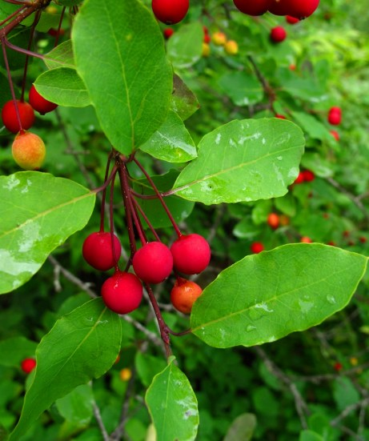

Contents:
Overview
Plants
Mammals
Birds
Reptiles & Amphibians
Human Activity
Plants in the Wetlands
Our swamps are dominated either by Hemlock-Balsam Fir-Black Ash stands, Alder stands, or Red Spruce-Hardwood stands (Red Maple, Yellow Birch, White Pine, Alder).
In the marshes one can find plant species unique to this kind of habitat. Noted in Brett’s report are nodding bur marigold, heart-leaved tearthumb, Carex canescens, C. brunnescens, C. lupulina, C. lacustris, C. gynandra, C. cf disperma, C. trisperma, Glyceria grandis, G. striata, water starwort, woolgrass on stumps and mounds, Scirpus (microcarpus), Juncus effuses, golden saxifrage, swamp saxifrage, sensitive fern, cinnamon fern, marsh fern, wood nettle, turtle head, Ranunculus recurvatus, Utricularia vulgaris, Bluejoint, bulrush, cattail, rice cutgrass, horsetail, Canada goldenrod, rough-stemmed goldenrod, dwarf raspberry, mountain holly, winterberry, geum, Torreyochloa pallida, jewelweed, Viola macloskeyi, and V. cucullata. Presumably, there are others as yet to be found.
Invasive plants: The wetland had a very small sampling of shrub honeysuckle on some banks but was otherwise found to be remarkably free of exotic species. The photo to the left is of mountain holly, found on the edge of one of the ponds.